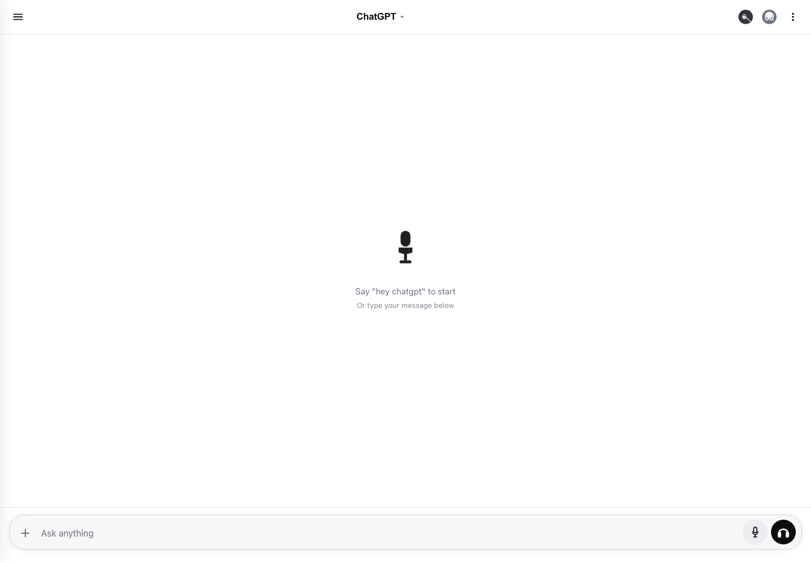
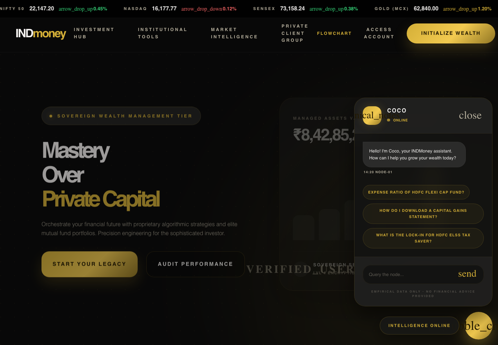

Case file
He can translate ambiguity into product artifacts and working systems.
Shivam brings PM framing, research discipline, backend fundamentals, and hands-on AI prototyping into the same operating loop.
Case file
Shivam brings PM framing, research discipline, backend fundamentals, and hands-on AI prototyping into the same operating loop.
Evidence
His voice adoption work starts from real context: shared spaces, privacy hesitation, trust, and habit formation.
Forensics
From acoustic reconstruction pipelines to Spring Boot APIs, the technical layer is visible and verifiable.
Case studies, prototypes, technical projects, and published research, arranged for a reviewer who wants proof quickly.

Voice UX / PM case / Prototype
Designed a private, controlled voice input experience for Indian students using ChatGPT in hostels, libraries, classrooms, and shared spaces.



Accessibility / Product design
Reframed fire safety around guaranteed attention using wearable vibration alerts, visual room modules, app setup, backup power, and privacy-first reliability.
Research notes, PRDs, product design decks, live apps, and code are attached so the work stays inspectable.
Problem definition, success metrics, target segment, solution rationale, user flow, and launch readiness.
Open PRDSurvey insights, personas, context barriers, feature discoverability, and the true barrier behind low usage.
Open researchInclusive safety system for deaf and hard-of-hearing users with reliable multi-modal alerting.
Open deckJWT auth, RBAC, validation, normalized MySQL schema, clean API layers, and 15+ endpoints.
View repoTask automation, structured outputs, prompt design, human-in-the-loop refinement, and evaluation thinking.
View GitHubMouse-wheel through the proof stack: research, PRD, AI build, and inclusive product design.
Voice research for Indian students surfaced the real issue: shared spaces, social discomfort, trust, and habit formation.

Discreet Voice Mode connects target users, MVP scope, user flow, success metrics, and release readiness.

The review pulse agent turns public app reviews into clustered themes, summaries, and stakeholder-ready product signals.
The fire alarm redesign reframes safety around guaranteed attention using wearable vibration, visual alerts, and reliable local fallback.
Readable source artifacts: the resume and case study PDFs are stored locally in this repo.
At UiT The Arctic University of Norway, Shivam worked on computational acoustic imaging, combining AutoSAFT and BM4D filtering for clearer reconstruction.
A broader GitHub trail shows API building, frontend practice, Python utilities, and product prototypes.
His path runs through BIT Mesra, UiT research, backend projects, and NextLeap PM training. That mix is useful for AI products that need both user empathy and systems judgment.
Built product artifacts across research, problem framing, metrics, prioritization, product design, and AI prototyping.
Developed acoustic image processing pipelines, handled large datasets, and collaborated with an international research team.
Engineering foundation with self-study in data structures, Java, DBMS, operating systems, and computer networks.
Structured for AI Product Manager screens, technical screens, and ATS parsing without making the page feel like a keyword dump.
User research, problem framing, PRDs, product strategy, roadmapping, prioritization, user stories, wireframing, MVP definition, Agile and Scrum.
AI use case discovery, prompt engineering, Claude API integration, AI workflow design, human-in-the-loop thinking, evaluation metrics.
Funnel thinking, activation, retention, engagement metrics, success metrics, experimentation, and data-backed decision making.
C++, Python, SQL, Spring Boot, REST APIs, microservices, ReactJS, Node.js, MySQL, Git, and GitHub.
Best fit: AI product teams that value user research, technical fluency, prototyping, and clear product documentation.